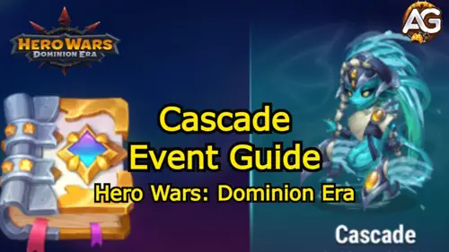

The long-awaited Cascade Event has finally arrived in Hero Wars Dominion Era, bringing a powerful new hero, exciting missions, and valuable rewards.
For many players, the biggest question is: can free-to-play players unlock Cascade at six stars during the event?
The answer is yes but it requires careful planning, smart resource management, and prioritizing the right event mechanics. In this guide, we’ll go over how the event works, the best strategies to maximize rewards, and the step-by-step path to unlocking Cascade at six stars, even if you’re a free-to-play player.

Cascade Event, a game event from Hero Wars Alliance developed by Nexters.
Who Is Cascade in Hero Wars Dominion Era?
Cascade is the newest hero added to Dominion Era. On mobile, Cascade is an agility-based hero. On Web and Facebook (Dominion Era), however, she becomes a magic hero, making her a strong addition to mage-based team compositions. Her abilities revolve around Mark of Water, which has incredible synergy with Krista and Lars. This creates a deadly trio capable of controlling enemy teams and dealing massive magic damage. For players looking to strengthen their mage teams, Cascade is a must-have hero.
How the Cascade Event Works
The Cascade Event is divided into several types of missions and mechanics that reward you with event currencies, crystals, and resources. To unlock Cascade, you’ll need to understand how to progress efficiently. Event missions are your primary source of Energy Crystals and Valor Coins. They include tasks like farming campaign missions, leveling up heroes, spending energy, and completing in-game activities. These missions are tiered into Stage 1 and Stage 2, both of which are free to enter. Free-to-play players should focus on completing all available missions in these first two stages before worrying about premium objectives.
Hero Missions
Inside the event, you’ll find hero-specific missions, such as upgrading Ishmael or other designated heroes to higher star levels. Every completed hero mission grants additional rewards and helps you unlock more event milestones. Since these missions can be skipped after you’ve done them once, repeat them until all available hero upgrades are complete. Prioritizing hero missions early will compound your event progress and open higher reward tiers sooner.
Valor Coins and Energy Crystals
Valor Coins are used in the Altar of Destiny, where you exchange them for Soul Stones and other rewards. Energy Crystals are necessary for progressing through the Event Workshop, where you upgrade special tomes and amulets to improve your farming efficiency. Managing these two currencies wisely is key to reaching six stars on Cascade. Spend Valor Coins primarily on Altar pulls that target cascade soul stones, and use Energy Crystals to power the workshop upgrades that lower costs and boost yield.
The Event Workshop: Which Upgrades to Prioritize
The Workshop is the backbone of this event. Here you’ll find three key upgrades: the Tome of Greed, the Tome of Generosity, and the Amulet of Battle. The Tome of Greed should always be your first priority. Upgrading it reduces costs and increases the bonus rewards you receive when spending energy, converting resources, or leveling relics.
At higher levels, it drastically improves your farming efficiency. The Tome of Generosity is your second priority. This tome improves your Soul Stone conversions, giving you more Cascade Soul Stones over time. The Amulet of Battle is your last priority. While it provides useful boosts for completing battles, it’s less important than ensuring a steady supply of Soul Stones and currency.
Always max out the Tome of Greed first. Even at level one, it lowers your costs significantly, but by level six, the returns are game-changing. The lower cost per altar pull and the higher energy returns will let you do more pulls for the same resource investment, which directly translates into more Cascade Soul Stones. Prioritizing the tome accelerates every part of your event progression.
The Altar of Destiny and Soul Stone Farming
The Altar of Destiny is where most of your Valor Coins will be spent. Each spin gives you a chance at Cascade’s Soul Stones, along with other rewards. Always open in multiples of 10 to maximize efficiency. The higher your Workshop upgrades, the lower the cost per 10x pull, making it easier to farm Soul Stones. On average, each 10x pull gives between 36–40 Cascade Soul Stones. Since you need 630 Soul Stones to unlock Cascade at six stars, efficient spending here is absolutely crucial. Save your coins for batch pulls, and avoid single pulls unless you are targeting a specific shop item.
Free-to-Play Path to Six Stars
Here’s how a free-to-play player can realistically reach six stars: complete all free missions in Stages 1 and 2; focus on hero missions early and repeat them until you’ve completed all requirements; upgrade the Tome of Greed first and aim for at least level 6; use Valor Coins at the Altar of Destiny in batches of 10 pulls; prioritize Cascade Soul Stones over red items or other rewards; and save excess energy for daily missions that continue rewarding event currency. With this method, you may not get everything at once, but by the end of the event, it’s entirely possible to reach six stars without spending money.
Battle Pass: Is It Worth Buying?
The Battle Pass for this event costs about $30 (≈R$150). Here’s what you get: 20,000 Emeralds upfront (which already matches the value of the pass in the regular store), an exclusive Cascade event skin, and extra Soul Stones, crystals, and resources. While the skin is not essential Cascade can still perform well without it the real value is in the Emeralds and bonus resources. If you are free-to-play and want to stay that way, skip the pass. If you don’t mind spending a bit, the pass is one of the best-value purchases you can make for event progression.
Cascade’s Role in Team Compositions
As a magic hero, Cascade fits perfectly into mage-centered lineups. Her Mark of Water ability synergizes extremely well with Krista and Lars, amplifying control and burst damage. Teams that use markers, displacements, and AoE magic damage benefit the most from Cascade’s kit. Recommended team examples include Cascade + Krista + Lars + Celeste + Martha and Cascade + Aurora + Orion + Helios + Martha. Her ability to apply Marks and boost magic damage makes her an excellent choice against physical-heavy enemy teams and a solid core for control-burst strategies.
What to Buy in the Event Shop
The event shop offers various items, but not all are worth your currency. Here’s the priority list: Cascade Soul Stones should always be the main focus. Next, pet energy and skin stones are great for long-term progression. Hero Soul Stones (like Julius, Polaris, Aidan, etc.) are useful if you’re missing rare heroes, but secondary. Totems and upgrade materials are optional, based on your current progress. Avoid wasting currency on consumables like energy potions or common upgrade items you can farm these naturally. Focus purchases that move you closer to that 630 soul stone target first.
Mistakes to Avoid
Don’t rush into buying energy potions or low-value consumables from the shop. These may feel useful in the short term but cost resources that could otherwise be spent on Altar pulls. Don’t prioritize red items over Soul Stones if your main goal is to unlock Cascade. Red-grade rewards are flashy but not necessary for hitting six stars. Finally, don’t skip the Workshop progression upgrading tomes early is the cheapest way to increase your long-term gains.
Final Thoughts
The Cascade Event in Hero Wars Dominion Era is one of the most rewarding events for both spenders and free-to-play players as long as you approach it strategically. Prioritize missions and the Tome of Greed upgrades. Focus your resources on unlocking Cascade Soul Stones. Use the Altar of Destiny wisely, always in 10x batches. Remember: the event skin is nice but not essential six stars on Cascade should be your main goal. Cascade is a strong addition to mage teams and will have a lasting impact on the game’s meta, especially when paired with Krista and Lars. With patience and careful planning, you’ll not only unlock her but also strengthen your overall roster significantly.
Conclusion
Yes, free-to-play players can unlock Cascade at six stars. It requires discipline, smart upgrades, and prioritizing Soul Stones over flashy items, but it’s absolutely achievable. Follow this guide to maximize your event efficiency, and focus on the core mechanics that yield the most progress: the Workshop, the Altar, and the event missions. Good luck, and enjoy playing with Cascade in your Dominion Era lineups.
About the Author
Alexandre Domingos holds a postgraduate degree in Engineering and works as a Production Supervisor. In his spare time, he explores the gaming world as a YouTuber and blogger at Alexandre Games, combining his passion for technology and strategy. He has been immersed in gaming since the age of 5, starting on classic platforms like MSX, Master System, Nintendo, and even an old 286 PC. Since 2019, Alexandre has also been playing Hero Wars and Mobile Legends, among other mobile games, creating guides, tutorials, and analyses for the community.
Video suggestion
Video: Unmissable Tips for the Cascade Event in Hero Wars Dominion Era! 💧✨
Did you like our Cascade Event Guide Tips for Hero Wars Web & Facebook? Is there something you didn't understand or would like to suggest changes to? We invite you to join our comment section on the Alexandre Games Blog page. Feel free to express your opinion, clarify your doubts, and share your suggestions. Click the button below to get started: